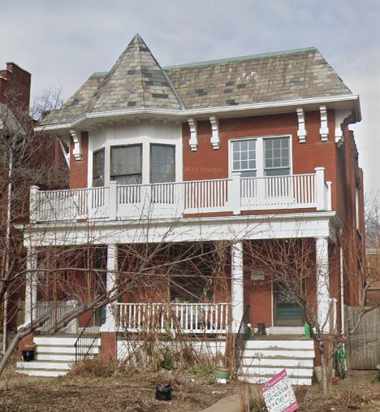

St. Louis! Home of Busch Beer, the Cardinals, and the largest art installation on the Mississippi River. A city that over the course of it's long life has been governed by the French, Spanish, the French again, and currently, the Americans. Founded on Valentine's Day in 1764, the city has been around for over 250 years! In that time plenty of unusual people have called it their home and left their weird stamp on this city. That's where we come in. We're going to explore the unusual, esoteric, and just plain odd people and places that make this city unique.
Where to begin with so many weird people? Why not go for the gold and learn about one of the strangest of them all? This is where the strange story of Pearl Lenor Curran and Patience Worth comes in.
Tell me friends, when you were young, were you ever warned about the evil of those damned Ouija Boards? Widely considered by many pearl-clutching church ladies to be the mouthpiece of the Lucifer himself, these devilish divination tools have long been sold to children by our friends at Parker Brothers originally, and then Hasbro.
Taking the country by storm around the turn of the 20th century, they rode the popularity of the Spiritual Movement to help feed America's astounding appetite for anything Occult or esoteric. Yes, if St. Louis is weird, it's because it's part of America, which is a world leader in weirdness. The "Mystifying Oracles" were originally popularized by traumatized survivors desparate to reach loved ones that were killed during the Civil War. By 1900, the boards were being mass produced as a parlor game. One of these boards made it to a neighbor of a Mrs. Pearl Curran in 1912.
Pearl Currean (born Pearl Lenore Pollard) was a St. Louis housewife that had not finished high school. She lived comfortably, enjoying socializing and going to restaurants and the theater. "Talking boards" were known in their social circle, however Pearl was not particularly interested in the pasttime. Soon a friend of Pearl's, a Mrs. Hutchings, began bringing an Ouija board to Pearl's house. On July 18th, 1913, a clear message came through the board: Many moons ago I lived. Again, I come. Patience Worth, my name."
Pearl continued communicating with the spirit. It was revealed that Patience had llived betwen the dates of 1649 - 1694 and that she had grown up in the English countryside. Patience was deliberately vague about details of her life, however it was eventually revealed that Patience had come to America and had been murdered by Natives.
Pearl communicated so often with Patience that she no longer needed to use the Ouija board. She would dictate the messages from Patience to observers, and eventually began recording the messages using a pencil, then a typewriter. Patience communicated poems, stories, and eventually books, to Pearl. Over the course of 25 years, Patience (through Pearl) wrote 5,000 poems, a play, and five novels.
Pearl continued working with Patience until her death in 1937. Sceptics have reviewed the works produced through this other-wordly collaboration, and have claimed that no evidence can be found that a Patience Worth lived in England. There is disagreement regarding the lexicon and vocabulary used by Patience. Some sources claim that the language used by Patience was not historically accurate for any particular time in English history, while others claim that the language used is historically accurate.
Pearl Curran's apartment was located at 6031 Kingsbury Avenue in case you would like to visit the site where this unusual story took place. 
If you would like to read some of Patience's work for yourself, you can order some of the books using the below links:
Hope Trueblood
The Gospel Of Jesus Christus
The Patience Worth Record